조경기사 (2015-09-19 기출문제)
1과목: 조경사
1. 유토피아(Utopia) 라는 책을 집필함으로써 유토피아 계획에 영향을 미친 사람은?
- Alexander Pope
- Joseph Addison
- Richard Steele
- Thomas More
(정답률: 61%)

2. 다음 중 서원에 대한 설명으로 옳지 않은 것은?
- 연못은 대부분 방지형태를 취하였다.
- 초기에는 제향중심의 공간구성을 이루었다.
- 서원에 식재되는 수목은 매우 한정적이었다.
- 점경불은 완상적 효과보다는 기능성에 의해 도입되었다.
(정답률: 46%)
3. 다음의 사찰 배치도는 1탑 1금 당식의 전형적인 배치를 보여 주고 있다. 이 사찰의 배치는 연지가 있고 중문, 5층 석탑, 금당, 강당이 차례로 놓여 져 있고 회랑으로 둘러져 있다. 이 사찰은?
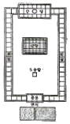
- 미륵사
- 황룡사
- 정릉사
- 정림사
(정답률: 61%)
4. 다음 중 정원의 공간구성을 알 수 있는 옛 그림이 존재하지 않는 곳은?
- 강진 다산초당
- 담양 소쇄원
- 함안 무기연당
- 담양 명옥헌
(정답률: 53%)
5. 『대도시 공원체계(metropolitan park system)」중 가장 최초의 것으로 도시공원화 운동에 기여한 것은?
- 시카고의 도시공원체계
- 뉴욕의 도시공원체계
- 보스톤의 도시공원체계
- 로스엔젤레스의 도시공원체계
(정답률: 54%)
6. 다음 다리 중 사용재료가 다른 하나는?
- 선암사 숭선교
- 세연정 비홍교
- 광한루 오작교
- 향원정 취향교
(정답률: 57%)
7. 백제시대의 궁남지의 조성연대와 기록된 문헌이 모두 옳은 것은?
- 개로왕 31년(서기 630 년), 삼국사기
- 개로왕 35년(서기 634년), 삼국유사
- 무왕 31년(서기 630년), 동사강목
- 무왕 35년(서기 634 년), 삼국사기
(정답률: 67%)
8. 다음 중 정자의 평면 모양이 부채꼴인 것으로 짝지어진 것은?
- 경복궁의 향원정, 이화원의 곽여정
- 봉화의 청암정, 피서산장의 수심사
- 소쇄원의 광풍각, 북해의 경청제
- 창덕궁의 관람정, 졸정원의 여수동좌헌
(정답률: 80%)
9. 다음 중 중국의 원림조성과 관련된 저서가 아닌 것은?
- 이어의 한정우기
- 계성의 원야
- 문진형의 장물지
- 박흥생의 촬요신서
(정답률: 72%)
10. 다음은 침전조 정원 어느 곳에 대한 설명인가?
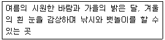
- 야라미즈
- 동대
- 조전
- 차사
(정답률: 59%)
11. 공원(Park)의 어원적 의미와 가장 관련이 깊은 조경공간은?
- 수도원
- 과수원
- 공중정원
- 수렵장
(정답률: 70%)
12. 정원 내에 만든 가산의 연결이 옳지 않은 것은?
- 무산십이봉(巫山十二峯) - 진주 용호정
- 아미산(峨嵋山) - 경복궁 교태전의 후원
- 만세산(萬歲山) - 연산군이 경회루에 조성
- 수미산(須彌山) - 백제의 노자공이 일본 계리궁 뜰에 만든 것
(정답률: 41%)
13. 르네상스시대 알베르티 (Albeπi)의 부지선정 요소가 아닌 것은?
- 배수(排水)
- 풍향(風向)
- 수원(水源)
- 수림(樹林)
(정답률: 61%)
14. 벌 막스(Burle Marx)에 대한 설명으로 옳지 않은 것은?
- 남미의 향토식물을 조경수로 활용하였다.
- 열대경관을 새롭게 주목받게 하였다.
- 20C의 바로크, 도시미화적 표현가로 평가된다.
- 풍부한 색체, 지피류와 포장 그리고 물을 통한 패턴을 창작하였다.
(정답률: 70%)
15. 일본 에도시대는 여러 정원의 형식들을 종합하여 회유식(回遊式) 정원이 완성된 시기였다. 이 시대의 대표적인 정원은?
- 계리궁(桂離宮), 수학원이궁(修學院離宮)
- 대덕사(大德寺), 후락원(後樂園)
- 대선원(大仙院), 영보사(永保寺)
- 서방사(四芳寺), 서천사(瑞泉寺)
(정답률: 80%)
16. 다음 중 전라북도 남원에 있는 ‘광한루원’에 관한 설명으로 옳지 않은 것은?
- 황희(黃喜)가 세운 광통루(廣通樓)가 그 전신이다.
- 광한루(廣寒樓)라는 이름은 전라감사 정철(鄭澈)이 지은 것이다.
- 오작교는 장의국(張義國)이 남원부사로 있을 떄 만든 것이다.
- 광한루 앞의 큰 못에는 3개의 섬이 있고 오작교 서쪽의 작은 못에는 1개의 섬이 있다.
(정답률: 50%)
17. 다음 설명과 일치하는 조경 공간은?
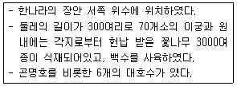
- 상림원(上林苑)
- 화림원(華林園)
- 온천궁(溫泉宮)
- 구성궁(九成宮)
(정답률: 77%)
18. 다음 중 워싱턴, 파리 등의 도시계획 구조에 가장 큰 영향을 미친 것은?
- 프랑스의 베르사이유(versailles) 궁전
- 중국의 원명원(圓明園)
- 미국의 센트럴 파크(Central Park)
- 이탈리아의 빌라 랑테(Villa Lante)
(정답률: 48%)
19. 클로이스터 가든(Cloister Garden)에 대한 설명이 아닌 것은?
- 흉벽이 있는 중정
- 원로의 중심에는 커넬 배치
- 교회건물의 남쪽에 위치한 네모난 공지
- 두 개의 직교하는 원로에 의한 4분할
(정답률: 62%)
20. 전통담장 조영에 있어 벽돌, 기와 등으로 구멍이 뚫어지게 쌓는 담은?
- 분장(粉牆)
- 곡장(曲墻)
- 화문장(花紋牆)
- 영롱장(玲瓏牆)
(정답률: 60%)
2과목: 조경계획
21. 대상지역의 기후에 관한 조사는 계획구역이 속한 지역의 전반적인 기후에 관한 조사와 계획구역 내에 국한된 미기후에 관한 조사로 나누어진다. 다음 중 『미기후』에 관한 조사 사항이 아닌 것은?
- 강우량
- 태양열
- 공기유통
- 안개ㆍ서리 피해지역
(정답률: 71%)
22. 일반적인 에너지 절약형 녹지계획 원리에 적합하지 않은 것은?(오류 신고가 접수된 문제입니다. 반드시 정답과 해설을 확인하시기 바랍니다.)
- 수목차양에 의한 냉난방 에너지 절약효과가 가장 큰 식재 방위는 동향이다.
- 차양과 무관한 건물의 북향, 동북향 및 서북향에는 낙엽수와 상록수를 밀식하여 증발산 효과를 최대화 한다.
- 난방기간이 긴 중부지방에서는 건물의 남향식재는 난방에너지 요구를 가중시키므로 차양수목의 식재를 회피해야 한다.
- 잔디공간은 꼭 필요한 용도 이외에 축소하고, 자연산림에서 볼 수 있는 자생초화류, 관목, 교목으로 구성되는 다층군식의 녹지경관을 조성하여 증발산 및 한풍감속 효과를 증진한다.
(정답률: 55%)
23. 『자연공원법』상의 공원용도지구 중 “공원자연보존지구의 완충공간(緩衝空間)으로 보전할 필요가 있는 지역”은?
- 공원집단시설지구
- 공원자연환경지구
- 공원밀집취락지구
- 공원문화유산지구
(정답률: 77%)
24. 다음 중 단지계획 시 접근로(계획도로)의 고려 사항으로 옳지 않은 것은?
- 연속적인 경관을 고려하여 장소에 따라 시야를 제한하거나 넓혀주어 변화를 준다.
- 도로형태를 자연지형에 따르게 하고, 불필요한 수목들은 제거함으로써 시야를 넓혀 준다.
- 가능한 범위 내에서 차도의 폭을 넓히고 회전 반경을 크게 하여 차량의 속도를 일정하게 해 안전한 보행을 도모한다.
- 오픈 스페이스의 일부분을 도로변에 형성시켜 운전자가 녹화된 주택지라는 느낌을 받을 수 있도록 한다.
(정답률: 35%)
25. 특이성비를 이용한 Leopold의주된 접근방법은?
- 현상학적 접근방법
- 경관자원적 접근방법
- 인간행태적 접근방법
- 경제학적 접근방법
(정답률: 49%)
26. 『도시공원 및 녹지 등에 관한 법률 시행규칙』상특정 원인에 의한 녹지의 설치허가신청시 도시ㆍ군계획시설사업의 시행자지정신청서 및 실시계획인가신청서에 첨부하여야 할 서류에 해당하지 않는 것은?
- 공사설계서
- 녹지의 관리방법을 기재한 서류
- 녹지의 규모 및 공사비 내역서
- 사용 또는 수용되는 토지나 건물의 소재지ㆍ지번ㆍ지목 및 소유권 이외 권리의 명세서
(정답률: 39%)
27. 『도시공원 및 녹지 등에 관한 법률 시행령』에 따른 도시공원의 점용허가를 위한 구체적 기준이 틀린 것은? (문제 오류로 실제 시험에서는 3,4번이 정답처리 되었습니다. 여기서는 3번을 누르면 정답 처리 됩니다.)
- 경찰관파출소는 소공원에는 설치하지 아니할 것
- 전선은 불가피한 경우를 제외하고는 지하에 설치할 것
- 경찰관파출소의 건축면적(연면적을 말한다)은 116m2이하가 되도록 할 것
- 변전소는 유지관리를 고려하여 지상에 설치할 것
(정답률: 78%)
28. 『국토의 계획 및 이용에 관한 법률』상 용도지역 중 녹지지역의 세분에 해당되지 않는 것은?
- 보전녹지지역
- 공원녹지지역
- 생산녹지지역
- 자연녹지지역
(정답률: 47%)
29. 다음 중 ‘자연공원’의 폐지나 그 구역의 축소 사유에 해당하지 않는 것은?
- 천재지변으로 인해 자연공원으로 사용할 수 없게 된 경우
- 정부출연기관의 기술개발에 중요한 영향을 미치는 연구를 위하여 불가피한 경우
- 군사상 또는 공익상 불가피한 경우로서 대통령령으로 정하는 경우
- 공원구역의 타당성을 검토한 결과 자연공원으로 존치시킬 필요가 없다고 인정되는 경우
(정답률: 55%)
30. 생태체헙사업의 종류 중 「자연생태 체험사업」의 범위에 해당하지 않는 것은?
- 생태체험사업을 위한 주민지원
- 공원 내 갯벌, 사구, 연안습지, 섬 등 해양 생태계 관찰활동
- 자연공원특별보호구역 탐방 및 멸종위기 동식물의 보건ㆍ복원 현장 탐방
- 우수 경관지역, 식물군락지, 아고산대, 하천, 계곡, 내륙습지 등 육상생태계 관찰활동
(정답률: 57%)
31. 미국조경가협회(ASLA)에서 정의하는 조경업무의 유형이 아닌 것은?
- monuments
- urban design
- infrastructure
- interior landscapes
(정답률: 53%)
32. 다음 『자연환경보전법』상의 정의 중 ( )안에 알맞은 용어는?
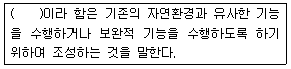
- 생물자원
- 대체자연
- 자연유보지역
- 유사자원
(정답률: 63%)
33. 방형구를 이용한 식생조사방법의 설명으로 옳지 않은 것은?
- 지형의 고저차에 따른 식생분포상태를 조사할 때 적용한다.
- 조사를 위한 최소 면적은 종류-면적곡선(species-area curve)에서 구한다.
- 조사구의 크기는 조사목적 및 대상으로 하는 식물군락의 성질에 따라 다르다.
- 방형구 조사법은 식물군집을 대표하는 식분내에서의 방형구 배치방법에 따라 무작위 방형구법과 주관적 방형배치법이 있다.
(정답률: 67%)
34. 『환경영향평가법』에서 정하는 환경영향평가 항목은 자연생태환경, 대기환경, 수환경, 토지환경, 생활환경, 사회환경ㆍ경제환경 분야로 구분된다. 이 중「생활환경 분야」의 평가 세부사항에 해당 하는 것은?
- 인구
- 위락ㆍ경관
- 주거
- 토양
(정답률: 54%)
35. 1980년대 도시문제를 해결하기 위한 수단으로 뉴어바니즘(New Urbanism)이 발생하였다. 이에 대한 설명으로 가장 거리가 먼 것은?
- 전통적인 근린주구 방식을 지향한다.
- 도시외곽은 고밀화 방식을 지향한다.
- 환경친화적인 도시미화운동을 지향한다.
- 걷고 싶은 보행환경 구축을 지향한다.
(정답률: 71%)
36. 행락계획에서 고려하는 생태적 수용력이 아닌 것은?
- 동물에 영향이 없는 정도의 행락이용 수준
- 식물에 영향이 없는 정도의 행락이용 수준
- 토양 및 수질에 영향이 없는 정도의 행락이용 수준
- 행락경험의 질이 훼손되지 않는 정도의 행락 이용 수준
(정답률: 74%)
37. 도시ㆍ군계획 수립 대상지역의 일부에 대하여 토지 이용을 합리화하고 그 기능을 증진시키며 미관을 개선하고 양호한 환경을 확보하며, 그 지역을 체계적ㆍ계획적으로 관리하기 위하여 수립하는 도시관리계획을 무엇이라고 하는가?
- 광역도시계획
- 도시ㆍ군기본계획
- 지구단위계획
- 상세지구계획
(정답률: 61%)
38. 옥상녹화 시 기존 설비 외에 추가로 식물생육과 관련하여 고려할 물(水 )처리방식은?
- 저수
- 방수
- 관수
- 배수
(정답률: 55%)
39. 체육시설업 시설물 설치 및 부지 면적의 제한과 관련된 다음 자동차경주장업 설명의 ( )안에 알맞은 수치는?
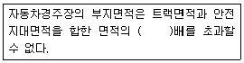
- 2
- 4
- 6
- 10
(정답률: 46%)
40. 『도시공원 및 녹지 등에 관한 법률』에서 규정하고 있는 어린이 공원의 설치기준은?
- 유치거리 250m 이하, 규모 1500m2 이상
- 유치거리 500m 이하, 규모 1000m2 이상
- 유치거리 250m 이하, 규모 500m2 이상
- 유치거리 500m 이하, 규모 2500m2 이상
(정답률: 56%)
3과목: 조경설계
41. 한국이나 중국에서 색을 오행(五行)에 비유하여 나타내는 상징으로 사용하였다. 다음 중 색과 오행의 연결이 틀린 것은?
- 빨강 - 불(火)
- 노랑 - 흙(土)
- 검정 - 물(水)
- 파랑 - 쇠(金)
(정답률: 65%)
42. 기본계획안 작성 시 포함되지 않는 것은?
- 집행계획
- 시설물상세계획
- 하부구조계획
- 시설물배치계획
(정답률: 62%)
43. 설계도의 종류에 관한 설명으로 틀린 것은?
- 입면도 : 수직적 공간구성을 보여주기 위한 도면
- 배치도 : 계획의 전반적인 사항을 알기 위한 도면으로 시설물의 위치, 도로체계, 부지경계선 등을 표현
- 단면도 : 구조물 또는 대상지의 일부구간을 수직으로 잘라 내부 구조 및 공간구성을 표현한 도면
- 평면도 : 확대된 축척을 사용하여 시공이 가능하도록 재료, 공법, 치수 등을 자세히 기입한 도면
(정답률: 67%)
44. 경관평가를 휘한 척도의 유형 중 사물 혹은 특성에 고유번호를 부여하여 측정하는 척도는?
- 명목척
- 순서척
- 등간척
- 비례척
(정답률: 60%)
45. 다음 중 일시적 경관 또는 순간적 경관에 대한 설명이 아닌 것은?
- 노루와 사슴이 물을 마시는 호숫가의 풍경
- 잔잔한 호수면에 비추어진 구름
- 잔디밭에 놓여 진 거대한 수석
- 저녁 노을이 불게 물든 호숫가
(정답률: 77%)
46. 조경설계기준 중 체육공원의 기본설계 내용으로 틀린 것은?
- 운동시설로는 체력단련시설을 포함한 3종 이상의 시설을 배치한다.
- 공원면적의 5~10는 다목적 광장으로, 시설전면적의 50~60%는 각종 경기장으로 배치한다.
- 운동시설은 공원 전면적의 80% 이내의 면적을 차지하도록 하며, 주축을 동-서 방향으로 배치한다.
- 공원면적의 30~50%는 환경보존녹지로 확보하며 외주부 식재는 최도 3열 식재 이상으로 하여 방풍ㆍ차폐 및 녹음효과를 얻을 수 있어야 한다.
(정답률: 77%)
47. 위요된 공간에서 혼잡하다고 느낄 때, 이를 완화시키기 위한 공간의 구성으로 틀린 것은?
- 천정을 높인다.
- 적절한 칸막이를 만들어 준다.
- 외부공간으로 시선을 열어준다.
- 장방형의 공간을 정방형으로 만든다.
(정답률: 69%)
48. 다음 중 그림에 대한 설명으로 틀린 것은?
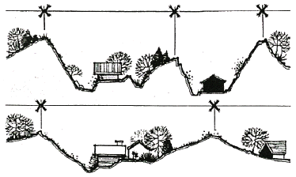
- 능선 간의 간격이 빠르고 완만한 리듬을 나타낸다.
- 완만한 지형은 부드럽고 감각적이며, 경직된 지형은 공간 내에 진취적이고 고조된 느낌을 부여 한다.
- 지형은 여하한 규모이든 경관의 미적특성과 리듬에 대해 직접 연관을 맺고 있다.
- 구릉성 산지 내에서의 계곡과 능선의 크기 및 폭은 경관의 지각적 리듬에 직접적인 영향을 미치지 않는다.
(정답률: 74%)
49. 다음의 설명중 이것이란 무엇을 말하는가?
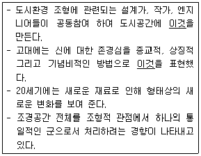
- 옥상정원(roof garden)
- 모험놀이터(adventure playground)
- 수퍼그래픽(super graphic)
- 환경조각(environment sculpture)
(정답률: 56%)
50. 다음 중 주차장의 주차단위구획에 관한 기준 중 「평행주차형식 이외의 장애인전용」의 규격은?
- 너비 1.0m 이상, 길이 2.3m 이상
- 너비 3.3m 이상, 길이 5.0m 이상
- 너비 2.0m 이상, 길이 5.0m 이상
- 너비 2.3m 이상, 길이 5.0m 이상
(정답률: 73%)
51. 다음 그림과 같이 투상하는 방법은?
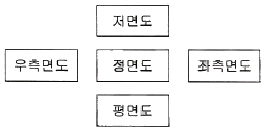
- 제1각법
- 제2각법
- 제3각법
- 제4각법
(정답률: 55%)
52. 조경설계기준 상의 다음 설명 중 ( )안에 내용으로 옳은 것은?
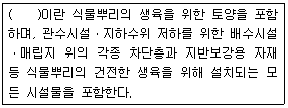
- 식재기반
- 특수지반
- 인공지반
- 원지반
(정답률: 57%)
53. 도시의 스카이라인 형성에 직접적인 영향을 미치지 않는 지표는?
- 용적률
- 입면차폐도
- 건축물 높이
- 가구(街區)크기
(정답률: 64%)
54. 오스트발트 색상환에 대한 설명으로 틀린 것은?
- 헤링의 반대색설의 4색을 기본으로 만들었다.
- 노랑과 남색, 빨강과 청록의 그 중간 색상을 배열하여 8색으로 만들었다.
- 우측 회전순으로 번호를 붙이 24색을 만들었다.
- 최종적으로 100색상을 사용한다.
(정답률: 60%)
55. 다음 중 시간성과 속도감에 대한 설명으로 틀린 것은?
- 높은 명도의 밝은 색이 느리게 움직이는 것으로 느껴진다.
- 높은 채도의 맑은 색은 속도감이 빠르게, 낮은 채도의 칙칙한 색은 느리게 느껴진다.
- 장파장 계열은 시간이 길게 느껴지고, 속도감에서는 반대로 빨리 움직이는 것 같이 지각된다.
- 주황색 선수 복장은 속도감이 높아져 보여 운동경기 시 상대편을 심리적으로 위축시키는 효과가 있다.
(정답률: 65%)
56. 도면 표제란의 구성 시 표기되어야 할 것 중 가장 부적합한 것은?
- 공사명
- 예정공정
- 도면 작성일
- 축척
(정답률: 74%)
57. 다음 빈칸에 들어갈 용어를 순서대로 맞게 연결한 것은?
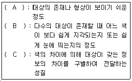
- A : 식별성, B : 유목성, C : 시인성
- A : 유목성, B : 가독성, C : 식별성
- A : 정성성, B : 상징성, C : 시인성
- A : 시인성, B : 유목성, C : 식별성
(정답률: 55%)
58. 리튼(Litton)의 7가지 산림경관 유형 중 지형이 특징을 나타내고 있어 관찰자가 강한 인상을 받게 되고 경관의 지표가 되는 것은?
- feature landscape
- panoramic landscape
- enclosed landscape
- focal landscape
(정답률: 51%)
59. 장애인 등의 통행이 가능한 접근로를 설계하고자 할 때 기준으로 틀린 것은? (단, 장애인ㆍ노인ㆍ임산부 등의 편의증진 보장에 관한 법률 시행규칙을 적용한다.)
- 가로수는 지면에서 2.1미터까지 가지치기를 하여야 한다.
- 접근로의 기울기는 10분의 1이하로 하여야 한다.
- 휠체어사용자가 통행할 수 있도록 접근로의 유효폭은 1.2미터 이상으로 하여야 한다.
- 접근로와 차도의 경계부분에는 연석ㆍ울타리 기타 차도와 분리할 수 있는 공작물을 설치하여야 한다.
(정답률: 70%)
60. 그림과 같이 도형의 한쪽이 튀어나와 보여서 입체로 지각되는 착시현상은?
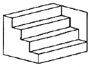
- 대비의 착시
- 반전 실체의 착시
- 착시의 분할
- 방향의 착시
(정답률: 61%)
4과목: 조경식재
61. 다음 각 수종에 대한 설명으로 옳지 않은 것은?
- 회양목 : 상록수이며 전정에 강하여 토피아리로 이용한다.
- 머나무 : 자웅이주이며 붉은 열매가 열린다.
- 송악 : 과명은 포도과이며 상록활엽만경목이다.
- 붓순나무 : 열매는 골돌과, 6 ~ 12개의 삭편이 바람개비처럼 배열된다.
(정답률: 60%)
62. 우리나라에서 사용되는 녹음수에 대한 설명으로 가장 부적합한 것은?
- 녹음용 수목은 수관폭이 넓을수록 좋다.
- 풍부한 녹음을 위해서는 낙엽활엽수보다 상록활엽수가 좋다.
- 휴식 및 이용공간의 녹음수는 답압에 잘 견디는 수종이 좋다.
- 녹음용 수목은 주로 그늘을 이용하기 때문에 지하고를 일정한 높이로 유지할 수 있는 교목이 적합하다.
(정답률: 68%)
63. 종자의 품질을 알아보기 위해 순정종자의 무게를 측정한 결과 종자시료 100g 중에서 순정종자는 50g 이었다. 또한 임의로 160 개의 순정종자만을 골라 발아를 시켜보았더니 80개가 발아하였다. 그렇다면 종자의 효율은?(오류 신고가 접수된 문제입니다. 반드시 정답과 해설을 확인하시기 바랍니다.)
- 25%
- 50%
- 75%
- 80%
(정답률: 44%)
64. 자동차 배기가스에 약한 수목으로만 짝지어진 것은?
- 향나무, 은행나무, 녹나무
- 측백나무, 태산목, 벽오등
- 소나무, 단풍나무, 튤립나무
- 석류나무, 양버즘나무, 무궁화
(정답률: 50%)
65. 야생생물 보호 및 관리에 관한 법률 시행규칙상 멸종위기 야생생물 I급에 속하는 식물종이 아닌 것은?
- 광릉요강꽃(Cypripedium Japonicum)
- 섬개야광나무(Cotoneaster wilsonii)
- 나도풍란(Aerdes japonicum)
- 매화마름(Ranunculus kazusensis)
(정답률: 42%)
66. 조경수목의 규격표시와 관련한 설명 중 옳은 것은?
- 수고(H)는 근원부에서 수관의 최상단까지의 수직높이를 말하며, 도장지를 포함한다.
- 수관폭(W)은 타원형 수관의 경우 가장 넓은 부분의 길이로 한다.
- 흉고직경(B)은 지상에서 1.2m 높이 부위의 굵기를 말하며, 쌍간일 경우에는 합친 값의 0.7배로 한다.
- 수관길이(L)는 수관의 평균길이를 말한다.
(정답률: 60%)
67. 옥상조경에 사용되는 경량재(輕量材) 토양의 특성에 대한 설명 중 옳지 않는 것은?
- 화산모래는 다공질로서 통기성, 투수성이 좋다.
- 펄라이트는 염기성치환용량이 커서 보비성이 크다.
- 버미큘라이트는 흑운모, 변성암을 고온으로 소성한 것으로 보수성, 통기성, 투수성이 좋다.
- 피트모스는 한랭한 습지의 갈대나 이끼가 흙속에서 탄소화 된 것으로 보수성, 투수성, 통기성이 좋고, 산도가 높다.
(정답률: 54%)
68. 느릅나무과에 속하는 팽나무의 학명은?
- Zelkova serrata
- Ulmus davidiana
- Celtis sinensis
- Aphananthe aspera
(정답률: 60%)
69. 수목의 개화결실 촉진기술로 주로 사용하지 않는 것은?
- 절목법
- 환상박피
- 콜히친 처리
- 지베렐린 처리
(정답률: 54%)
70. 쌍자엽식물과 단자엽식물의 일반적인 특징을 비료한 것으로 옳지 않은 것은?
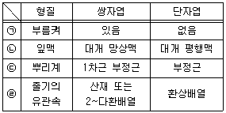
- ㉠
- ㉡
- ㉢
- ㉣
(정답률: 54%)
71. 도시 생태계의 일반적 특징이 아닌 것은?
- 생태계 구조의 단순화
- 잡식성 동물종의 우점도 증가
- 귀화식물 등 불건전한 특유의 종 출현
- 원에종 위주의 증가로 생물종 다양성 증가
(정답률: 64%)
72. 다음 중 자생수종의 장점으로 가장 부적합한 것은?
- 주변의 지형 및 식생과 잘 어울린다.
- 향토의 환경에 잘 적응되어 있다.
- 식재 후 유지 및 관리 비용이 적게 든다.
- 항상 묘목의 구입이 용이하다.
(정답률: 73%)
73. 다음 중 잎의 형태가 다른 하나는?
- Ailanthus altissima
- Melia azedarach
- Euodia daniellii
- Phellodendron amurense
(정답률: 25%)
74. 가을철에 붉은색으로 단풍이 드는 수종이 아닌 것은?
- Rhus tricocarpa
- Prunus sargentii
- Acer pictum subsp mono
- Diospyros kaki
(정답률: 51%)
75. 블라운 블랑케(Braun-Blanquet)의 식생조사법에서 교목림의 조사면적으로 가장 적당한 것은?
- 50 ~ 100m2
- 150 ~ 500m2
- 500 ~ 1000m2
- 1000 ~ 2000m2
(정답률: 43%)
76. 도심지 내 쾌적한 환경을 창출하기 위한 소생물권(Biotope) 확보를 위한 방안이 아닌 것은?
- 야생 조류들을 유인할 수 있는 식이식물을 배식한다.
- 도심지 하천의 둔치에는 수목만으로 배식해야 한다.
- 외래식물보다 자생식물을 많이 이용하여 배식해야 한다.
- 하천이 가진 고유의 역할에 지장이 없는 범위 내에서는 다양한 굴곡이나 수심이 있는 공간을 조성하도록 한다.
(정답률: 72%)
77. 과거의 개체적인 레벨에서 벗어나 조경식재에 생태학적 사고방식을 도입하여 식재하는 수법은?
- 군락식재
- 사실식재
- 기교식재
- 자유식재
(정답률: 45%)
78. 우리나라 마을의 정자목으로 사용되는 수종이 아닌 것은?
- Sophora japonica
- Zelkova serrata
- Campsis grandifolia
- Celtis sinensis
(정답률: 57%)
79. 『Betula platyphylla var. japonica』 의 설명으로 틀린 것은?
- 극양수이고, 도시공해에 약하다.
- 수관이 치밀하여 녹음이 좋기 때문에 녹음수로 적당하다.
- 잎은 낙엽성으로 삼각상 난형이고, 치아상의 거치가 있다.
- 아름다운 흰 수피를 지녀 조경공간에 대비 효과를 줄 수 있다.
(정답률: 54%)
80. 어떤 산지시험 Plot당 개체수가 각 50개체이고, 각 Plot에서 임의로 2개체씩 모두 10개체를 택하는 추출방법은?
- 계통추출법
- 층화표본추출법
- 단순표본추출법
- 집략표본추출법
(정답률: 34%)
5과목: 조경시공구조학
81. 벽돌쌓기, 블록쌓기 등 조적공사에 적용되는 규준틀은?
- 세로규준틀
- 수평규준틀
- 귀규준틀
- 평규준틀
(정답률: 49%)
82. 조경수목의 흉고직경 측정방식에 있어 줄기가 둘 이상일 경우 측정방식으로 옳은 것은?
- 각 수간의 흉고직경의 합계를 규격으로 채택 한다.
- 각 수간의 흉고직경을 합한 값의 평균치를 규격으로 채택한다.
- 각 수간의 흉고직경 합의 50%가 그 수목의 최대 흉고직경보다 작을 때는 최소 흉고직경을 그 수목의 흉고직경으로 한다.
- 각 수간의 흉고직경 합의 70%가 그 수목의 최대 흉고직경보다 클 때는 흉고직경 합의 70%를 기준으로 채택한다.
(정답률: 57%)
83. 다음 중 주로 토공사용으로 활용되는 장비로 가장 거리가 먼 것은?
- bull dozer
- scraper
- grader
- truck crane
(정답률: 49%)
84. 원지반의 모래질흙 3000m3와 점질토 2000m3를 굴착하여 6m3 적재 덤프트럭으로 성토현장에 반입하고 다졌다. 다진 후의 성토량은 얼마인가? (단, 모래진흙: L=1.25, C=0.88, 점질토: L=1.30, C=0.99)
- 6350m3
- 5430m3
- 4620m3
- 4530m3
(정답률: 48%)
85. 다음 설명하는 특징을 갖는 조명등은?
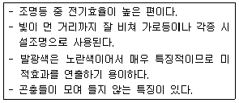
- 크세논램프
- 할로겐등
- 메탈할라이드등
- 고압나트륨등
(정답률: 62%)
86. 『자전거 이용시설의 구조ㆍ시설 기준에 관한 규칙』의 설명으로 틀린 것은?
- 「자전거 이용 활성화에 관한 법률」에 근거한다.
- 자전거도로의 폭은 하나의 차로를 기준으로 1.5m 이상으로 한다.
- 자전거전용도로에서 자전거도로의 설계속도는 30 km/hr 이상으로 한다.
- 종단경사 7% 이상에서 제한길이는 200m 이하이다.
(정답률: 62%)
87. 도로의 편경사 설치 목적과 기준에 관한 설명으로 틀린 것은?
- 편경사와 곡선반경은 비례한다.
- 도로의 곡선부에서 차량의 횡활동을 방지하기 위해서 설치한다.
- 가장 빈도가 많은 속도에 대해서 자중(自重)과 원심력의 합력이 노면에 수직이 되도록 한다.
- 도로 곡선부에서 원심력에 의하여 한쪽으로 쏠러 승차감이 좋지 않은 것을 보정하여 준다.
(정답률: 54%)
88. 다음 진도관리 곡선(S-curve, 바나나 곡선)의 설명으로 틀린 것은? (단, 예정진도선의 위쪽은 상부허용한계를 아래쪽은 하부허용한계를 나타낸다.)
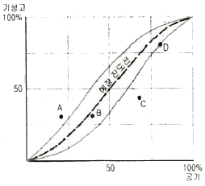
- 실시상태의 공정이 바나나곡선의 한계 내에서 진행될 수 있도록 공정을 조정해 나간다.
- A점은 예정보다 많이 진척되었으므로 경제적이다.
- B점은 예정진도와 비슷하므로 그대로 진행되어도 좋다.
- D점은 허용 한계선 상에 있으나 중점관리를 하여 공사를 촉진시킬 필요가 있다.
(정답률: 64%)
89. 다음 계약 체결 절차의 흐름으로 옳은 것은?
- 공고 → 입찰 → 낙찰 → 계약
- 입찰 → 공고 → 낙찰 → 계약
- 공고 → 낙찰 → 입찰 → 계약
- 낙찰 → 공고 → 입찰 → 계약
(정답률: 72%)
90. 다음 네트워크 공정표에서 상호관계만을 표현하는 파선 화살표를 무엇이라 하는가?
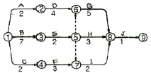
- 작업(activity)
- 더미(dummy)
- 결합(event)
- 소요기간(duration)
(정답률: 65%)
91. 비탈면의 소단에 대한 설명으로 틀린 것은?
- 횡단경사는 20 ~ 30% 정도가 일반적이다.
- 유수거리를 단축시켜 침식을 방지한다.
- 비탈면의 경사를 완만하게 하여 사면의 안정성을 증가시킨다.
- 비탈면 표면을 흘러내리는 유수의 수세를 약화시킨다.
(정답률: 51%)
92. 각 등고선으로 둘러싸인 면적이 다음과 같을 때 195m 등고선 위의 토량을 평균단면법으로 구한 값은? (단, 등고선의 수치 단위는 m 이며, 정상은 평평한 것으로 가정한다.)
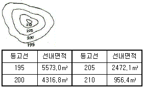
- 20000.8m3
- 25134.0m3
- 33295.8m3
- 50268.0m3
(정답률: 27%)
93. 콘크리트의 연직시공 이음의 설명으로 틀린 것은?
- 시공이음면의 거푸집을 견고하게 지지하고 이음부분의 콘크리트는 진동기를 써서 충분히 다져야 한다.
- 새 콘크리트를 타설할 때는 신ㆍ구 콘크리트가 충분히 밀착되도록 잘 다져야하며, 새 콘크리트를 타설한 후 적당한 시기에 재 진동다지기를 하는 것이 좋다.
- 시공이음면의 거푸집 철거는 콘크리트가 충분히 굳을 수 있도록 되도록 늦게 실시하며, 일반적으로 거푸집 제거 시기는 여름철의 경우 콘크리트를 타설한 후 1~2일 정도로 한다.
- 구 콘크리트의 시공이음면은 쇠솔이나 쪼아내기 등에 의하여 거칠게 하고, 수분을 충분히 흡수시킨 후에 시멘트 페이스트 등을 바른 후 새 콘크리트를 타설하여 이어나가야 한다.
(정답률: 49%)
94. 흙의 함수율, 함수비, 공극률, 공극비에 대한 설명으로 틀린 것은?
- 함수율은 공극수 중량과 흙 전체 중량의 백분율이다.
- 공극률은 흙 전체 용적에 대한 공극의 체적 백분율이다.
- 공극비는 고체부분의 체적에 대한 공극의 체적비이다.
- 함수비는 토양에 존재하는 수분의 무게를 흙의 제적으로 나눈 백분율이다.
(정답률: 50%)
95. 그림과 같은 보에서 지점 B에서의 반력 크기(kN)는?
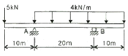
- 37.5
- 62.5
- 87.5
- 125
(정답률: 33%)
96. 다음 설명하는 배수계통의 종류는?
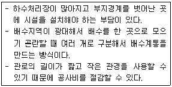
- 직각식(直角式)
- 차집식(遮潗式)
- 선형식(扇形式)
- 방사식(放射式)
(정답률: 60%)
97. 기계경비 산정 시 『노무비』의 계산방법으로 옳은 것은?
- 노임 × 수량 × 1일작업시간 × 월급여(상여계수) × 작업일수(휴지계수)
- 노임 × 수량 × 시간당작업량 × 월급여(상여계수) × 작업일수(휴지계수)
- 노임 × 수량 × 시간당작업량 × 작업효율 × 작업일수(휴지계수)
- 노임 × 수량 × 1일작업시간 × 작업효율 × 작업일수(휴지계수)
(정답률: 50%)
98. 재료가 탄성한계 이상의 힘을 받아도 파괴되지 않고 가늘고 길게 늘어나는 성질을 가리키는 것은?
- 연성(ductility)
- 전성(malleability)
- 취성(brittleness)
- 인성(toughness)
(정답률: 63%)
99. 섬유포화점 이하에서 목재의 함수율 감소에 따른 목재의 성질 변화에 대한 설명으로 옳은 것은?
- 강도가 증가하고 인성이 증가한다.
- 강도가 증가하고 인성이 감소한다.
- 강도가 감소하고 인성이 증가한다.
- 강도가 감소하고 인성이 감소한다.
(정답률: 46%)
100. 도로조명의 계산식에서 ‘F'가 의미하는 것은?
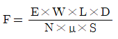
- 조명률
- 노면의 평균조도
- 광원의 열수
- 사용 광원 한 개당 광속
(정답률: 33%)
6과목: 조경관리론
101. 꽃아그배나무의 생육이 불량하고 신초 선단의 어린잎이 황화현상을 일으키며, 2~3년생 가지의 표피가 울퉁불퉁하게 변하고, 그 내부조직이 검게 죽었다. 원인을 구명하기 위하여 기본적으로 토양산도를 조사한 결과 pH5.0으로 나타났다. 다음 중 적절한 대책이 아닌 것은?
- 퇴비나 구비, 질소비료의 과용을 금한다.
- 탄산석회를 나무 1주당 40~60kg을 사용한다.
- 수목 주변으로 배수구를 설치하여 배수관리를 잘 한다.
- 황산칼륨을 시비하고, 관수를 자주하여 물이 토양 깊이 스며들게 한다.
(정답률: 52%)
102. 크레인으로 얽어매는 작업 시 유의사항이 아닌 것은?
- 중심 위치에 훅을 걸 것
- 긴 물건은 원칙적으로 세로로 맬 것
- 물체의 진동을 손으로 정지시키지 말 것
- 얽어매는 용구는 능력에 충분한 여유가 있는 것을 사용할 것
(정답률: 64%)
103. 목재 시설물의 점검 시 유의하여야 할 항목과 가장 관련이 적은 것은?
- 이용 목적
- 부재(部材)의 절단
- 도장(途裝)의 상태
- 부재(部材)의 부패
(정답률: 57%)
104. 다음 중 양이온치환용량(CEC)이 가장 큰 점토 광물은?
- kaolinite
- chlorite
- illite
- montmorillonite
(정답률: 37%)
1⑤. 토양에서 유기태 질소화합물이 무기태 질소로 변환되는 반응은?
- 질소기아현상
- 무기화작용
- 고정화작용
- 질소고정작용
(정답률: 41%)
106. 오동나무 빗자루병의 전염경로로 가장 적당한 것은?
- 공기전염
- 종자전염
- 충매전염
- 토양전염
(정답률: 50%)
107. Tensiometer는 무엇을 측정하는 장비인가?
- 토양의 수분장력
- 토양의 경도
- 토양의 반응
- 토양의 염기포화도
(정답률: 53%)
108. 병원체가 전반되는 방법과 병원체의 연결이 서로 옳지 않은 것은?
- 물에 의한 전반 - 잣나무 털녹병균
- 토양에 의한 전반 - 장미 근두암종병균
- 바람에 의한 전반 - 밤나무 줄기마름병균
- 종자에 의한 전반 - 오리나무 갈색무늬병균
(정답률: 51%)
109. 제초제가 작물에는 피해(약해)를 주지 않고 잡초만을 죽일 수 있는 특성은?
- 제초제의 내성
- 제초제의 감수성
- 제초제의 선택성
- 제초제의 저항성
(정답률: 63%)
110. 다음 개별구조물에 관한 설명 중 틀린 것은?
- 노출콘크리트 경관가벽의 쪼아내기, 샌드브라스트 등 특수한 처리는 공사시방서에 따른다.
- 장식문주의 상단은 홈을 만들어 수분의 침투에 따른 장식적 효과를 부여하고, 마감소재와의 접속을 좋게 한다.
- 야외무대 스텐드의 평균기울기는 전방시야를 확보하기 우하여 1 : 4 이상을 유지하도록 한다.
- 담장 내ㆍ외측의 정지계획고가 상이할 경우 침수투에 의한 전도를 방지할 수 있는 물구멍을 일정간격으로 설치해야 한다.
(정답률: 40%)
111. 조경시공 현장에서의 자금관리를 위한 기본 자료에 포함되지 않는 것은?
- 작업표준서
- 공사계약서
- 공사공정표
- 공사실행예산서
(정답률: 42%)
112. 수목 멀칭(mulching)의 기대 효과가 아닌 것은?
- 토양구조가 개선된다.
- 염분농도를 조절한다.
- 토양침식과 수분의 손실을 방지한다.
- 태양열의 복사와 반사를 증가시킨다.
(정답률: 57%)
113. 다음 중 클레이 포장의 보수방법에 대한 설명으로 틀린 것은?
- 답압시는 반드시 살수를 한다.
- 표층안정제는 주로 염화마그네슘 또는 염화칼슘 등을 사용한다.
- 다짐공은 진동롤러, 콤팩터류 또는 간이롤러를 사용한다.
- 불균일이 생긴 경우 황토와 양질토의 배합토를 깔고 단진 후 1m2당 표층안정제를 5kg 살포한다.
(정답률: 39%)
114. 다음 중 밤나무혹벌의 방제법으로 적당하지 않은 방법은?
- 등화유살법을 사용한다.
- 천적인 기생봉을 이용한다.
- 내충성 품종을 선택하여 식재한다.
- 피해 꽃봉오리를 물리적으로 제거하여 소각한다.
(정답률: 30%)
115. 다음과 같은 재해에 대한 원인분석시 “사고유형”을 올바르게 나열한 것은?
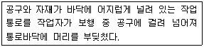
- 비례
- 낙하
- 전도
- 충돌
(정답률: 48%)
116. 파괴되어 가고 있는 자연과 역사적 환경 등을 보전하기 위하여 최초 영국의 로버트 헌터경 등 3인에 의해 창립된 단체는?
- Vandalism
- National Trust
- Volunteer Trust
- Community Nonprofit Agency
(정답률: 61%)
117. 다음 재료들 중 표지판의 문자판 또는 지주로 적절하지 않은 재료는?
- 목재
- 석재
- 금속재
- 합성수지재
(정답률: 47%)
118. 다음 중 주로 토양전반을 하는 병원체가 아닌 것은?
- Rhizoctonia
- Pythium
- Colletotrichum
- Fusarium
(정답률: 38%)
119. 줄기의 같은 높이에서 서로 반대되는 방향으로 마주 자란 가지를 무엇이라 하는가?
- 도장지(徒長枝)
- 윤생지(輪生枝)
- 평행지(平行枝)
- 대생지(對生枝)
(정답률: 61%)
120. 분제의 물리적 성질인 토분성(吐粉性d, ustability)에 대한 설명으로 옳은 것은?
- 분제가 입자의 크기와 보조제의 성질에 따라 작물해충 등에 잘 달라붙는 성질을 말한다.
- 살분 시 분제의 입자가 풍압에 의하여 목적하는 장소까지 날아가는 성질을 말한다.
- 살분 시 분제의 입자가 살분기의 분출구로 잘 미끄러져 가는 성질을 말한다.
- 분제농약의 저장 시 주성분의 분해 및 응집 등 물리적 변화가 일어나지 않은 성질을 말한다.
(정답률: 44%)